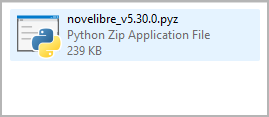
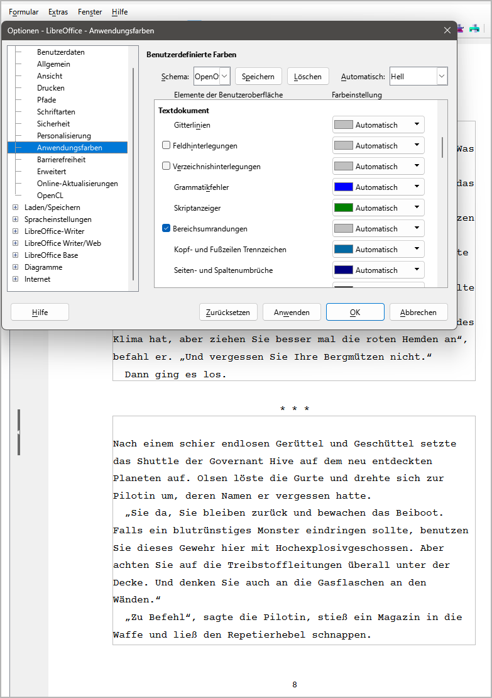

Vorbereitungen
Zusammenfassung
Im Folgenden beschreibe ich, wie Sie novelibre installieren. Außerdem gebe ich einige Tipps zur Einrichtung von LibreOffice und OpenOffice, um das Zusammenspiel mit novelibre zu optimieren.
novelibre einrichten
Wichtig
Bevor Sie novelibre unter Linux installieren können, müssen Sie sicherstellen, dass die auf der Projekt-Homepage genannten Voraussetzungen erfüllt sind. Insbesondere muss auf Ihrem System die Unterstützung für tkinter installiert sein. Für Ubuntu heißt das Paket z.B. python3-tk, für Fedora sollte es python3-tkinter sein. Die Installation des idle3-Pakets ist optional aber empfehlenswert.
Die eigentliche Installation von novelibre ist einfach und unkompliziert. Dabei legt das Installationsprogramm automatisch ein Installationsverzeichnis an, kopiert alles Nötige hinein, und erzeugt eine für den jeweiligen Rechner angepasste Startdatei namens run.pyw, die man aufrufen muss, um novelibre auszuführen.
Die notwendige Handarbeit besteht darin, diese Startdatei mit dem Desktop zu verknüpfen und, falls gewünscht, der Verknüpfung ein Programmsymbol zuzuweisen. Außerdem zeige ich, wie man es unter Windows einrichtet, dass die novelibre-Projektdateien ein eigenes Programmsysmbol erhalten, und dass beim Doppelklicken darauf die Programmanwendung gestartet wird.
Mit meinen einfachen Mitteln kann ich das leider nicht automatisieren, ohne Probleme mit den Sicherheitsmechanismen des Betriebssystems zu bekommen.
Das Programm installieren
- Schritt 1
Starten Sie entweder die heruntergeladene Datei novelibre_vx.x.x.pyz durch Doppelklick (Windows/Linux-Desktop),
oder führen Sie
`python novelibre_vx.x.x.pyz`(Windows), bzw.`python3 novelibre_vx.x.x.pyz`(Linux) auf der Kommandozeile aus.
„x.x.x“ ist dabei die Versionsnummer.
In beiden Fällen sollte ein Popup-Fenster erscheinen und den Erfolg der Installation anzeigen.

Wichtig
Viele Webbrowser erkennen den Download als ausführbare Datei und bieten an, sie direkt zu öffnen. Damit können Sie die Installation ganz bequem starten.

Abhängig von Ihren Sicherheitseinstellungen kann es allerdings auch passieren, dass Ihr Browser den Download der ausführbaren Datei zunächst verweigert. In diesem Fall ist Ihre Bestätigung oder eine zusätzliche Handlung erforderlich. Falls das nicht geht, können Sie auf den Download der zip-Datei ausweichen.
novelibre auf den Desktop bringen
Anmerkung für Linux-Benutzer
Die folgenden Schritte beschreiben das Vorgehen unter Windows.
Wenn Sie Linux benutzen, sollten Sie einen Programmstarter auf Ihrem spezifischen Desktop einrichten. Es geht darum, python3 mit /home/Ihr-Benutzername/.novx/run.pyw und einer optional angegebenen Datei als Parameter zu starten. Sie erhalten ein Programmsymbol auf Ihrem Desktop, das Sie anklicken können, und auf das Sie Ihre .novx-Projektdatei zum Öffnen ziehen können.
Mit dem XFCE-Desktop, zum Beispiel, lautet mein Befehl im Starter:
python3 /home/peter/.novx/run.pyw %F

Vielleicht müssen Sie die novelibre-Icons in ein spezielles Bilderverzeichnis kopieren, wo der Programmstarter die Programmsysmbole sucht. Sie sollten außerdem novelibre als Standardanwendungsprogramm für Dateien mit der Endung .novx angeben, und diesen Dateien das novelibre-Symbol zuweisen. Auf dem XFCE-Desktop war das alles für mich nicht allzu schwierig. Schauen Sie im Zweifelsfall in Ihre Desktop-Dokumentation.
Es ist eine gute Idee, die novx-Erweiterung in den mimetypes als text/xml zu registrieren, dann kann Ihr Webbrowser sie mit Hilfe des novx.css-Stylesheets darstellen.
- Schritt 2
Öffnen Sie das Installationsverzeichnis.

- Schritt 3
Ziehen Sie run.pyw bei gedrückter
Alt-Taste auf den Desktop. Das erzeugt eine Programmverknüpfung, um novelibre vom Windows-Desktop aufzurufen. Nun können Sie .novx-Dateien auch auf diese Verknüpfung ziehen.
- Schritt 4
Wahlweise können Sie das „Python“-Programmsymbol durch das novelibre-Logo ersetzen, das Sie im Unterverzeichnis icons des Installationsordners finden.
Dazu klicken Sie mit der rechten Maustaste auf die Programmverknüpfung und öffnen den Eigenschaften-Dialog. Wählen Sie den Verknüpfung-Karteireiter und klicken Sie auf Anderes Symbol… (1). Im Symbolauswahldialog klicken Sie auf Durchsuchen… (2). Das öffnet einen Dateiauswahldialog. Gehen Sie auf
<home>\.novx\iconsund doppelklicken Sie das „N“-Logo (3).
- Schritt 5
Um die Programmverknüpfung zu novelibre umzubenennen, klicken Sie mit der rechten Maustaste darauf und öffnen den Eigenschaften-Dialog. Im ersten Karteireiter ersetzen Sie „Verknüpfung mit run.pyw“ durch „novelibre“.

.novx-Dateien novelibre zuweisen
- Schritt 6
Wahlweise können Sie die Dateinamenserweiterung .novx der novelibre-Anwendung zuweisen. Dann werden Projektdateien im Explorer mit dem novelibre-Symbol angezeigt und können durch Doppelklick mit novelibre geöffnet werden. Außerdem können Sie .novx-Dateien mit Ihrem Webbrowser betrachten, wenn Sie ein novx.css Stylesheet im selben Verzeichnis haben.
Doppelklicken Sie auf das Skript add_novelibre.reg. Windows wird eine Warnung ausgeben und Sie um Bestätigung bitten. Falls Ihnen Zweifel kommen, können Sie sich die Datei add_novelibre.reg in einem Texteditor ansehen, oder einen Experten Ihres Vertrauens hinzuziehen.

Hinweis
Sie können das rückgängig machen, indem Sie das Skript remove_novelibre.reg ausführen. Das entfernt alle Einträge zu novelibre aus der Windows-Registry, wobei die Anwendung erhalten bleibt.
Um die Applikation mitsamt ihren Werkzeugen, Plugins und Konfigurationsdaten zu deinstallieren, löschen Sie einfach das Verzeichnis
<home>\.novx, nachdem Sie das Skript remove_novelibre.reg ausgeführt haben.
Wichtig
Wenn Sie novelibre unter Windows mit Doppelklick auf die .novx-Datei starten, ruft das unter der Motorhaube die aktuell installierte Version des Python-Interpreters auf.
Falls Sie zu einem späteren Zeitpunkt Ihre Python-Installation auf eine andere Version updaten, sollten Sie novelibre erneut installieren und danach add_novelibre.reg ausführen. Andernfalls wird Windows die neue Python-Version nicht finden, und Sie können .novx-Dateien nicht per Doppelklick öffnen.
Bitte behalten Sie das im Hinterkopf, auch wenn es reichlich unwahrscheinlich ist, dass novelibre in naher Zukunft ein Python-Update benötigt.
Das Programm oder ein Plugin aktualisieren
Führen Sie einfach die Schritte 1 und 2 wie oben beschrieben aus. Sollten weitere Handlungen nötig sein, erhalten Sie eine Meldung vom Setup-Skript.
Writer einrichten
Ich gehe davon aus, dass novelibre-Benutzer schon mit LibreOffice oder OpenOffice Writer vertraut sind. Daher will ich nur einige kurze Tipps geben, die sich speziell auf das Zusammenspiel mit novelibre beziehen.
Die Abschnitte im Manuskript sichtbar machen
Ein wesentlicher Teil des Arbeitsablaufs ist das Schreiben mit dem Textverarbeitungsprogramm Writer. Dazu erstellt novelibre bearbeitbare Manuskriptdateien im Format Open Document Text, die als temporäre Dokumente gedacht sind. Diese Dokumente enthalten Strukturinformationen, die es novelibre ermöglichen, die Abschnitte beim Zurücklesen zu erkennen und richtig einzusortieren.
Damit das alles funktioniert, ist es äußerst wichtig, dass Sie nur innerhalb der Abschnitte schreiben. Dazu sollten Sie in den Einstellungen von Writer die Bereichsumrandungen sichtbar machen, denn die novelibre-Abschnitte entsprechen den Bereichen (engl. „sections“) in Writer.
Das folgende Bild zeigt einen LibreOffice 7.6 Screenshot. Stellen Sie sicher, dass im Dialog Extras > Optionen > Anwendungsfarben das Feld Bereichsumrandungen angekreuzt ist. Texteingaben außerhalb der Bereichsumrandungen haben keinen Einfluss auf Ihr novelibre-Projekt.
Hinweis
Bei OpenOffice und bei älteren Versionen von LibreOffice kann der Dialog „Darstellung“ statt „Anwendungsfarben“ heißen.
Das Aussehen des Manuskripts anpassen
Das von novelibre erzeugte Manuskript entspricht einer Normseite mit 30 Zeilen zu 60 Anschlägen, wie sie üblicherweise benutzt wird, um die Anzahl der Druckseiten für die Veröffentlichung abzuschätzen.
Allerdings ist die eingesetzte Schriftart „Courier New“ nur in Windows verfügbar, und sie sieht im Druck auch nicht besonders gut aus (ich für meinen Teil habe die freie Schriftart Courier Prime unter Windows und Linux installiert, die mir ein angenehmes Schreibmaschinengefühl vermittelt).
Außerdem ist die Silbentrennung abgeschaltet, und die Seitengröße ist auf DIN A4 gesetzt, was nicht weltweit Standard ist.
Nichts für Sie? Kein Problem. Dazu gibt es die Dokumentvorlagen in Writer. Wenn Ihnen das Aussehen des generierten Manuskripts nicht gefällt, wenden Sie einfach eine Vorlage an, die Ihrem Geschmack und Ihren Anforderungen entspricht. Vielleicht müssen Sie dafür zuerst einmal Ihre eigene Vorlage erstellen, doch die Kenntnis dieser Technik wird sich auszahlen, spätestens wenn es um die Gestaltung von Druckseiten für das self publishing geht.
Wenn Sie also eine Dokumentvorlage oder ein Dokument mit den Formatvorlagen haben, mit denen Sie arbeiten möchten, kann novelibre diese für den Export verwenden. Wählen Sie dazu einfach in den Exportoptionen das Textdokument oder die Textdokumentenvorlage aus.
Tipp
Falls Sie nur die Schriftart ändern wollen, ohne gleich Dokumentvorlagen anzuwenden, können Sie LibreOffice die Schriftart auch automatisch ersetzen lassen. Dazu öffnen Sie den Dialog Optionen und gehen zu Schriftarten. Kreuzen Sie das Feld Ersetzungstabelle anwenden an. Dann tragen Sie die Schriftarten Ihrer Wahl ein.
novelibre benutzt „Courier New“ für Textdokumente, und „Calibri“ für Tabellendokumente.
Tipp
Falls Sie in Ihrem fertigen Dokument anstelle der drei-Sternchen-Abschnittstrenner lieber einfache Leerzeilen wollen, lässt sich das durch „Suchen und Ersetzen“ bewerkstelligen. Besonders komfortabel geht das mit einem Makro, das in der novelibre-tools-Erweiterung enthalten ist.
Tipp
Für das Wechseln zwischen unterschiedlichen Formatvorlagen in Writer empfehle ich meine StyleSwitcher-Erweiterung, mit der Sie Ihr Manuskript mit einem einzigen Mausklick anpassen können.
Eine Vorlage laden und die voreingestellte Schriftart oder Seitengröße ändern nimmt keinen Einfluss auf das Zurückspielen zu novelibre.